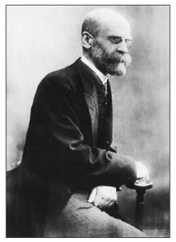
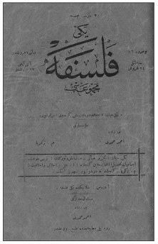
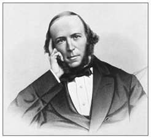
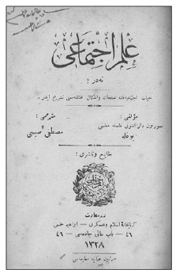
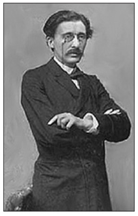
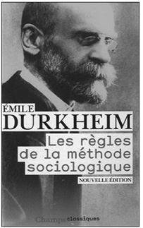
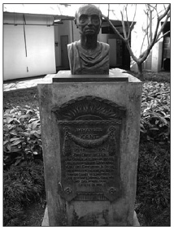
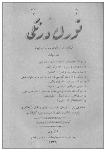
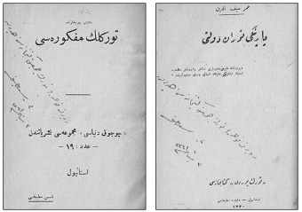

Jön Türk Devrimi ertesi gündeme gelen “yeni hayat” özlemi Balkanlar gibi sorunlu bir coğrafyanın en kozmopolit kenti Selanik’te doğdu. Keza İttihat ve Terakki Cemiyeti gibi o günün normlarıyla güçlü bir siyasi örgüt ancak sürekli etkileşim içinde olan milliyetçilikler ortamında güç kazanabilirdi. İttihat ve Terakki’nin kongreleri Balkan Harbi ile birlikte yitirilene kadar Selanik’te toplandı. Deniz ve kara yoluyla Avrupa’nın içerilerine bağlanan Selanik, Batı fikir hareketlerine de kapılarını açmış bir kentti. Kozmopolit yapısı bunu kolaylaştırmıştı. İttihat ve Terakki işte bu tür bir ortamda güç kazandı ve “yeni hayat” anlayışını gündemindeki “ictimaî inkılâb” için çözüm olarak gördü. Başta Genç Kalemler ve Yeni Felsefe Mecmuası olmak üzere Selanik dergileri “yeni hayat”a açılım sağladı.
Yeni Hayat ve Ziya Gökalp
Ziya Gökalp’in Genç Kalemler’in 8 Ağustos 1911 tarihli sayısında yayımlanan “Yeni hayat ve yeni kıymetler” yazısından kısa bir süre sonra yayın hayatına giren Yeni Felsefe Mecmuası “yeni hayat”ı derginin ana ilkesi olarak kabul etti. Derginin 28 Ağustos 1911’de yayımlanan ilk sayısı “Mesleğimiz ve yeni hayat” başlıklı yazıya yer veriyor ve izlenecek çizgiyi belirliyordu. Yazı, Türk gençliğinin üstleneceği kutsal amacı saptıyordu: “Bizim mukaddes bir gayemiz vardır ki o da gençlerimizi metin ve münevver bir dimağ ile yirminci asrın ihtiyaçlarına mukabele edebilecek ilmî ve fikrî bir kuvvette görmektir. Bugünkü ictimaî heyetimizin henüz yirminci asırdan pek uzak bir devirde bulunduğunu takdir eyleyenlerdeniz. Fakat müterakki gençlerin, mensup oldukları ictimaî heyeti yükseltmeye muktedir bulunduklarına dair sarsılmaz bir kanaatimiz vardır.”

Yeni Felsefe Mecmuası Durkheim’in tezlerini örneklerle
kanıtlama girişimi ardından şu sonuca varıyordu: “İşte
Durkheim sosyolojiye bu büyük hakkını vermeye muvaffak
olduğu için en doğru bir metot takip eden sosyologdur.”
Böylece Selanikli gençler 20. yüzyılın gerekleri doğrultusunda bir “ictimaî heyet” oluşturacaklardı. Bunun gerçekleşmesi için ise Batı’ya değil Doğu’ya bakılması gerekiyordu. Türk gençlerinin önünde Japonya örneği vardı. Avrupa’da tahsil görmüş Japon gençleri Japonya’yı battal ve günü geçmiş itikatların esaretinden kurtararak yükseltmişlerdi. Batı’nın çağdaş düşüncesini ülkelerine götürerek kendi topraklarının koşullarına uyarlamışlardı. Yeni Felsefe Mecmuası da benzer bir misyon üstlenmeyi vaat ediyordu. Batı biliminin ve felsefesinin son kuramlarını ülkeye getirecekti. Böylece eski hayatın koşullarını yıkmaya çalışacak ve yeni bir hayatın inşasına bilfiil katılacaktı. Aslında bu hareket Selanikli gençler arasında başlamıştı bile. 1908 Devrimi’nin ilk günlerinden itibaren Selanikli gençler gerçekleşen “siyasî inkılâb”ı “ictimaî inkılâb” ile sürdürme çabası içindeydiler.
Tabii bu süreçte Batı’yı körü körüne taklit etmek doğru olmazdı. Bu tür bir tavır ülkeyi yücelteceğine Batı’ya bağımlı kılardı. O güne kadar Avrupa’ya giden birçok Türk genci tam bir Levanten olarak ülkeye dönmüşlerdi. Türk olmaktansa Avrupalı ya da Fransız olmayı tercih etmişlerdi. Böylece Avrupalıları taklit etmişler ve dönüşlerinde çevrelerindekileri küçük görmüşlerdi. Bu tür bir tavır bu topraklarda yaşayan insanların yaşamlarını tehdit eder bir durum yaratmıştı. Türklerin Şarklı ruhu Batı’nın çökmekte olan ruhundan bütün bütün farklıydı. Bu ülkenin insanı Batı’nın benimsediği kaideleri körü körüne taklit edemezdi. Bunun önüne geçilmeliydi. Bu tür bir çöküntü ortamından Türk gençlerini kurtaracak olan “yeni hayat”tı. Yeni Felsefe Mecmuası’nın Tahrir Heyeti, Gökalp’in Genç Kalemler’deki makalesinin birçok paragrafını alıntılıyor, “yeni hayat”ı tanımlıyor ve ardından tıpkı Genç Kalemler gibi “yeni lisan”ın önemini vurguluyordu. “Yeni hayat”ın ilk emaresi dilde gözlemleniyordu. Yeni Felsefe Mecmuası da “yeni lisan”ı benimseyeceğini kaydediyordu.
Dergide “yeni lisan”ın Selanik’te büyük ölçüde kabul gördüğü vurgulanıyordu; “bugün bütün Selanik muharrirleri, yazıcıları yeni lisanı kabul etmiştir” deniyordu. İstanbul’da da benzer bir eğilim görülüyordu. Hemen hemen aynı tarihlerde yayın hayatına giren Türk Derneği dergisi yayımladığı beyannamede benzer sorunlara eğilmişti. Ama “yeni lisan”a karşı çıkanlar da yok değildi. Muhalifler arasında Köprülüzade Mehmed Fuad da vardı. Dile müdahale edilemeyeceğini söylüyor, “yeni lisan”ın hayalperest bir girişim olduğunu kaydediyordu. Yeni Felsefe Mecmuası bu eleştiri üzerine sert bir yazı kaleme almıştı. Makalede Köprülü’nün “yeni lisan”la yazmaya kalktığı takdirde “anlamadan tercüme ettiği, çaldığı makaleler”i yaldızlı sözcüklerin ardına saklayamayacağı kaydediliyordu.126Yeni Felsefe Mecmuası’nın gündeme alacağı bir diğer konu “kadınlığın ictimai mevkii” idi. Dergi kadınlığa ve kadın yazılarına da geniş yer ayıracaktı.
Yeni Felsefe ve Türklük
Yeni Felsefe Mecmuası “yeni hayat”a yönelirken aynı zamanda Türklük sorununu da ön plana çıkarıyordu. Bu süreçte yalnız değildi. Genç Kalemler’le birlikte yeni bir milliyetçilik akımına öncülük ediyordu. Selanik’teki Türkçülük İstanbul’unkinden özde farklıydı. Bunu en iyi dile getirenlerden biri Kâzım Nami [Duru] idi. 1903 yılı sonlarından 1912 yılı ortalarına kadar Selanik’te bulunan ünlü sosyolog, Selanik’teki gelişmeleri yakından izleme fırsatı bulmuştu. 1908 ile birlikte, tıpkı 1789’da Fransa’da olduğu gibi, Osmanlı insanı da “insanî” bir idealin peşine takılmıştı. Ancak, “Osmanlı vahdeti” ve “Osmanlı milleti” gibi ütopyaların peşinden koşan gençlik kısa sürede düş kırıklığına uğramış, kötümserliğe düşmüştü. İşte bu gençlik, er geç “millî şuur”un bilincine varacaktı. Bunda, Balkanlar’da uzun yıllardır devam eden kargaşanın payı büyüktü. Selanik, Balkanlar’ın kalbiydi ve tüm Balkanlar’daki gelişmeleri, çeteleri, yıldırma politikalarını yakından izliyordu. O nedenle Balkan milliyetçiliklerine daha duyarlıydı. Selanik’te Türk milliyetçiliğinin hareket noktası dil olmuştu. “Türklük” her şeyden önce “lisanda istiklal”i gerekli kılıyordu. Milliyetçilik güncel bir tabana oturtulmalıydı. Tarih geriden gelebilirdi. “Maziye rücu etmezden evvel hâlin realitesi” tespit edilmeliydi. O nedenle Selanik gençliği reel Türkçenin, konuşulan Türkçenin tespitiyle işe koyulmuştu. Tarihe gömülmeden, Altaylar’ı, Karakurum’u düşünmeden önce kendi bilinçaltında yaşayan Türklüğü keşfetmek gerekirdi. İşte bu anlayışla Ömer Seyfeddin’in öncülüğünde Selanik gençliği Genç Kalemler’i oluşturmuştu. “Yeni lisan” bu bilincin bayraktarıydı.
Kâzım Nami, İstanbul’daki milliyetçilik akımı ile Selanik’teki arasındaki farka dikkat çekiyor, İstanbul’u “ütopist” ve “pan”ist buluyordu. Selanik milliyetçiliğini ise “yürekleri çarptıran hakikî hisler” olarak ifade ediyordu. Selanik yitirildikten sonra İstanbul’daki “yurtçuluk”la Selanik’teki reel Türkçülük kaynaşacak, ancak Selanik daha sonraki gelişmelerde hâkim konuma gelecekti. Genç Kalemler’in, II. Meşrutiyet gibi Selanik’te doğuş nedenlerini sorgulayan Kâzım Nami, Makedonya’nın birbirine hiç ısınamayan, her biri ayrı ve kanlı bir ideal peşinde koşan unsurlarının “Osmanlılık” adı altında birleştirilemeyeceğini Selanikli gençlerin çok çabuk idrak ettiğini kaydediyordu. Bütün Osmanlı felaketlerinin zembereğini Arnavutluk isyanı çözmüştü. İsyan Osmanlıcılık diye bilinen yanlış idealin, masum bir siyasetin sonucuydu. İşte bu yanlış, yıllarca Paris’te yaşaya yaşaya evrensel değerlerle haşır neşir olan, “Hukuk-ı beşer beyannamesi”ni idealize eden Türk gençlerinin ruhunda nihayet bir yankı uyandırmıştı. Bu yankı, “yeni lisan”la birlikte kristalize olacaktı. Ancak birkaç bin nüsha basılan Genç Kalemler, bu mütevazı varlığına rağmen, Türk Derneği’nden, ya da Türk Yurdu’ndan daha etkin bir biçimde “millî şuur”un uyanmasına katkıda bulunmuştu. Kâzım Nami, “Genç Kalemler, lisanî ve edebî, binnetice ictimai Türk inkılâbında naçiz olsa da reel bir hizmet ifa etmiştir” diyordu. Genç Kalemler, bir ütopyanın peşinden gitmemişti. Realitenin ta kendisiydi. Balkan Harbi’nden sonra Türk yayın dünyasına, ki başı Türk Yurdu çekiyordu, Selanik’ten gelen Genç Kalemler’in ruhu hâkim olmuştu. “Türk şuuru sade onun reel mahsulü”ydü.127
Selanik’te doğmakta olan Türklük hareketi kısa bir süre sonra birtakım çevrelerde şovenlikle suçlanır olmuştu. Bu tür eleştirilere karşı Yeni Felsefe Mecmuası cevap vermekte gecikmedi.128Bu eleştirilere cevap verirken yine bilimsel olma kaygısını taşıyordu. Biyoloji Yeni Felsefe Mecmuası’nın da çözüm aracıydı. 19. yüzyılın uzviyetçi sosyolojisi ve bu bağlamda Darwin’in etkisi Yeni Felsefe Mecmuası’nda da bariz bir şekilde görülüyordu. Toplumsal olaylar eski zamanlardan beri biyolojik oluşumun bir türü olarak yorumlanmıştı. 19. yüzyılda biyolojinin büyük atılımları toplumsal hayat ile biyoloji arasında yakın bağın kurulmasına vesile olmuştu. Özellikle Darwin’den sonra biyolojinin temelini organizma, soyaçekim, adaptasyon, hayat kavgası, içgüdü gibi sorunlar oluşturmuştu. İşte, 19. yüzyılın son yarısında toplumsal hayatın biyoloji ile anlaşılmaya çalışılması Osmanlı düşünce dünyasını da belirlemişti. Yeni Felsefe Mecmuası da bu kervana katılmıştı.

“Yeni Hayat” Yeni Felsefe dergisinin her sayısında Tahrir Heyeti tarafından
geliştirilmiş bir dünya görüşüydü. Başlangıçta dil sorununu gündeme getirmişse
de giderek geniş bir alana yayılmış, bir yaşam felsefesine dönüşmüştü.
Yeni Felsefe Mecmuası’na göre doğa yasaları doğal olmayan durumların uzun süre varlığını sürdürmesine müsaade etmiyordu. Maddi olsun, manevi olsun birtakım çarpıklıklarla, doğallığı bozulan her şey, en sonunda mutlaka doğal bir yapıya dönecek, doğanın yasalarına boyun eğecekti. İnsan bedeninde de durum aynıydı. Hastalık da bir tür “arıza”ydı; doğal değildi. Bu nedenle uzun süre devam edemezdi: Ya iyileşecek ya da bedeni çöküntüye uğratacaktı. İyileştiği takdirde beden doğallığını kazanırdı. Aksi takdirde doğa kendi yasalarını uygular, hastalık ölümle sonuçlanırdı. Toplumsal yapılar, “ictimaî bünyeler” için de benzer bir durum söz konusuydu. Birey olsun, toplum olsun, varlığını sürdürmek için çaba sarf etmek zorundaydı. Bu çabayı göstermeyen, varlığını korumak için çalışmayan doğa kanunlarının gazabına uğrardı. Doğa kanunu “mevcudiyet”in bekasını mücadelede görüyordu. Bu da çalışmayı gerektiriyordu. Bu gerçeğe sırt çeviren yokluğa doğru yürümüş olurdu. Yok olmak istemeyen ataleti bırakmalı, bünyesine karşı kayıtsızlığı terk etmeli, mücadeleye girişmeliydi. Ancak bu koşullar altında yaşam sürdürebilirdi.
Bu uzviyetçi ve bir anlamda sosyal Darwinist anlayış, milletler ya da aynı anlama gelen “ırklar” için de geçerliydi. Milletler, varlıklarını sürdürebilmek için dünden çok daha fazla çaba sarf etmek durumundaydılar. Kendilerini korumak çabası içinde olan milletler üstün gelme hırsıyla çalışıyor, diğerleriyle rekabete girişiyor, uğraşıyor, didiniyorlardı. Tarih sayfaları bu mücadelelerin örnekleriyle doluydu.
“Mücadele kanunu”nun hükümlerini bilen milletler bu kanunun olumsuz sonuçlarından kurtulmak için büyük çaba sarf ediyorlardı. Tarihten ibret alamayanlar ise mahvoluyor, tarihten silinip gidiyorlardı. İşte Türkler hayatta kalabilmek için bu mücadeleye girişmek durumundaydılar. Bundan böyle hem günün mücadelelerine, hem de Türklüğün şanlı tarihine bakılacak ve Türklük bütün ihtişamı, bütün azametiyle yaşatılacaktı. Necip ve büyük Türk milleti, insanlık tarihine kahramanlar, cihangirler, harikalar hediye eden Türk ırkı, yıllarca, hatta yüzyıllarca süren kayıtsızlığı bir kenara bırakacak, hâlâ varlığını sürdüren Türklüğün parlak tarihine, şanlı hayatına layık olduğunu kanıtlayacaktı. Türklüğün parlak alnı, yerlere değil tarihî azametiyle, varlığıyla mağrur ve iftihar edercesine, yükseklere, semalara bakacaktı. Büyük Türk ırkı, muazzez Türklük her şeyin üzerinde yüce bir ruh taşıyordu.
İşte azimkâr Türk gençliği artık milletlerini kayıtsızlıktan kurtararak, ona namı kadar muhteşem bir gelecek hazırlamaya uğraşıyordu. Şunu biliyorlardı ki, bu kayıtsızlık sürgit devam ederse Türklük tarih sayfalarında yok olacaktı. Buna seyirci kalmak en büyük cinayetti. Ataları, eski Türkler, kahramanlar onlara lanet okuyacaklardı. Geleceğin Türk gençlerinin de nefretini, telinlerini üzerlerine çekeceklerdi. İşte “yeni hayat”ı benimseyen Türk gençlerinin “mefkûre” diye tanımladıkları idealler bu zemin üzerinde yükselecekti. Türklüğü yaşatabilmek için gençler ne dünü, ne de bugünü beğenecek, “yeni hayat”ı yaşayacaklardı.
Türklükle iç içe bir anlayış geliştiren “yeni hayat”çılar şovenlikle, müfritlikle, aşırılıkla itham edildiklerinde bu tür bir romantizmle ortaya çıkıyorlardı. Onlara göre, kimseye benzememenin, kendi üstün varlığını kendi ayrıcalıklarıyla yaşamayı istemenin şovenlikle, müfritlikle hiçbir ilgisi yoktu. İngilizler “İngiliz’iz!” diyor ve öyle yaşıyor, İngilizliklerini koruyorlardı. Fransızlar kendi gelişim çizgilerinden ve uygarlık anlayışlarından ödün vermiyorlardı. Keza, Bulgarlar Bulgarlıklarıyla, Rumlar Rumluklarıyla iftihar ediyorlardı. Türkler de “Türk’üz ve Türk olarak yaşayacak ve Türklüğümüzle iftihar edeceğiz” derlerse, bu neden şovenlik oluyordu? Türkler ananelerini feda etmeden, başkalarına benzemeden, Batı’yı taklit etmeden pekâlâ yaşayabilirlerdi. Ananeler gelişmeye engel değildi. İngilizler, İngilizliklerinden hiçbir şey kaybetmeye razı olmamış, cedleri ne bıraktıysa hepsini muhafaza etmişlerdi. Bu onların gelişimine mâni olmamıştı. Türkler Türklükleriyle gurur duydukları için neden şoven sayılsınlardı!
Batı’yı Taklit ve Yabancılaşma
Selanikli gençlerin Batı’yla kavgaları bir kimlik sorunuydu. Bu arayışta “taklit” baş köşeyi işgal ediyordu. Bunda Gabriel Tarde’ın sosyolojisinin büyük rolü vardı. 19. yüzyılın sonunda Tarde’ın taklitle ilgili söyledikleri sosyolojinin temel konularından birine dönüşmüştü. Tarde’a göre toplumsal olaylar psişik karakterdeydi. Bireysel bilinçlerin karşılıklı etkilerinin bir sonucuydu. Tarde’a göre toplumsal değişimin kaynağı “buluş”tu. Her yeni fikir, inanç ya da tavır, bir taklit dalgası doğurur ve bir başka dalgayla karşılaşıncaya kadar genişler dururdu. İki dalga karşılaşınca çatışma başlar ve bu çatışma sonucu ya her iki dalga birbirlerini yok eder ya da biri üstün gelirdi. Bir diğer seçenek senteze uğrayarak yeni bir buluşun kaynağını oluşturmalarıydı. Buluş, taklit ve çatışma toplumsal hayatın temel itici güçleriydi.

Herbert Spencer’a göre toplumlar bireylerden oluşuyordu. Bu nedenle
toplumun ve toplumsal olayların ruhuna nüfuz edebilmek için o bireylerin
ruh hallerinin incelenmesini yeterliydi.
Selanikli gençler için Batı’yı taklit ne denli anlamlıydı? Yeni Felsefe Mecmuası’nın ana sorularından biri buydu. Birçok Osmanlı Batı’ya gitmiş, yabancılaşarak ülkeye dönmüştü. Yeni Felsefe Mecmuası bunu “Levantenleşme” olarak görüyordu. Dergiye göre Osmanlı gençlerinde Batı’yı taklit için büyük bir eğilim vardı. Bu “meyil” Osmanlı’yı manen Batı’nın esiri olmaya zorlayacaktı. Oysa Türklerin “şerefli” ruhu Batı’nın tefessüh etmiş ruhundan büsbütün farklıydı. Bu nedenle Selanikli gençler “yeni hayat” anlayışlarında Batı’dan uzak duracak, yeni bir hayat kuracaklardı.
Aslında milletin ayrıştırıcı anlayışının gereği de buydu. Her milletin kendine özgü bir dizi meziyeti, âdeti, birtakım ahlak kuralları vardı. Bunlar olmaksızın milletten söz etmek olanaksızdı. Osmanlıların Avrupalılarınkinden tamamen farklı meziyetleri vardı. Bu nedenle Batı’yı taklit söz konusu olamazdı. Öte yandan Batı’nın taklit etmeye değer kurumları olup olmadığı da sorgulanabilirdi. “Yeni hayat”çılar kendi ülkelerindeki toplumsal yaşam koşullarının büyük bir çöküntü içerisinde olduğu kanısındaydılar. Hurafelerle dolu, yalan, yanlış bir hayat söz konusu idi. Bunlar her halükârda ıslah edilmeliydi. Fakat ıslah için “gelişmiş” milletlerin kurum ve âdetlerini almak çözüm olabilir miydi? Yeni hayatçıların buna verdikleri cevap “hayır”dı. Çünkü, her şeyden önce Batı’daki kurum ve âdetler istifadeye şayan değildi. Onlarda kendilerininki gibi çürük ve münfesihti.
Öte yandan Avrupa kurumları bilime, fenne ve mantığa da ters düşüyordu. Bunun en somut kanıtı Batı’da gözlenen açlık ve sefaletti. Batı incelendiği vakit, bu topraklardaki milyonlarca insanın aç ve sefil olduğu görülüyordu. Medeni diye nitelenen milletler büyük bir toplumsal çöküntüyle karşı karşıyaydılar. İstatistikler, Avrupa’da her gün açlıktan, bir lokma ekmek bulamamaktan dolayı ölen binlerce insanı gösteriyordu. Avrupa 9 milyon kilometrekare toprağa sahipken 320 milyon insanı barındırıyordu. Oysa Çin 9 milyon kilometrekare araziyle 450 milyon insanı besliyordu. Bununla birlikte Çin’de Avrupa’da olduğu kadar açlık ve sefalet yoktu. Avrupa’da gözlenen çöküntü hiçbir yerde yoktu. İnsanlar o denli perişan durumdaydılar ki hayvanın barındığı yerlerden daha sefil ve daha pis mahallerde yaşamak zorunda kalıyorlardı. Her gün sabahtan akşama kadar var gücüyle çalıştığı halde ancak bir günlük geçimini zar zor kazanan milyonlarca yoksul vardı. Bunlar Avrupa’da büyük bir ihtilalci orduyu oluşturuyorlardı. Avrupa’da zengin olup, müreffeh bir hayat yaşayabilenler ancak dört beş milyonken günde beş on kuruş kazanarak hayatını güçlükle idame ettiren 60-70 milyon insan vardı. Bu sefalet şüphesiz milletlerin yaşam tarzını da etkiliyordu. İstatistikler fakirlerin zenginlere göre yüzde 20 oranında daha az yaşadıklarını gösteriyordu. Demek ki bu sefalet Avrupa’da her gün binlerce kurban alıyordu.
Peki bu sefaletin nedeni neydi? Yeni Felsefe Mecmuası’nın buna verdiği cevap adını koymaksızın kapitalizmin ta kendisiydi. Batı’daki iktisadi kurumlar yanlış esaslar üzerine kurulmuştu. Servet yalnız birkaç kişinin elinde toplanmıştı. Buna karşılık milyonlarca insan esir ve sefildi. Birileri hiçbir çaba sarf etmeden milyonlara sahip olurken diğerleri sabahtan akşama kadar alın teri döküyor ve ancak beş on kuruş kazanabiliyordu. Yeni Felsefe Mecmuası kapitalizmi eleştiriyor ve bu tür bir yapıda özenilebilecek bir şey olmadığını vurguluyordu. Dünyanın oluşumundan 20. yüzyılın başlarına kadar sürgit devam eden bir “boğaz kavgası” vardı. Fakat bu kavga hiçbir zaman o günkü kadar vahim bir duruma gelmemişti. Önceleri de fakirler vardı ancak insanlar hayatta kalacak ekmeği tedarik edebiliyorlardı. Oysa, artık milyonerin biri verdiği ziyafet için 500.000 frank sarf etmekten çekinmezken, bir parça ekmeğe muhtaç olan 500.000 kişi açlıktan ölüyordu. Bu gerçekler karşısında “taklit” edilecek bir Batı’dan söz edilemezdi. “Eğer Garb’ın iktisadi müesseselerini hiç tebdil ve tahvile lüzum görmeksizin kabul edecek olursak yarın bizde de bir fakirlik zenginlik kavgası başlayacak ve ictimaî hayatımız körü körüne bir ictimaî cerihalarla bozulacaktır” diyordu.
Batı toplumundaki bu çürük yapı aile kurumu için de geçerliydi. Avrupa’da aile bağları çözülmekteydi. Eşlerin ilişkisi para üzerinden kuruluyordu. Batı’daki dertlerin en büyüğü parasızlıktı. Ailede de egemen olan paraydı. Aile ilişkilerini son kertede para çözümsüz kılmıştı. Aşk, paranın ardından koşan bir aldatmacadan öte bir şey değildi. Batı’nın uygar ülkelerinde sokaklar ihtiraslı insanlar tarafından kurulmuş tuzaklarla doluydu. Aile hayatı işte bu tuzaklara düşürülüyordu. Balolar, konserler, tiyatrolar birer tuzak mahalliydi. Buralarda, sahte vakarlar altında kız, erkek, herkes birbirini aldatıyordu. Böyle, çürük ve ahlaktan yoksun esaslar üzerine kurulmuş bir hayat, kaçınılmaz olarak evlilik sonrası da sürüyor, kadın ile erkek birbirini sürekli aldatıyordu. Samimiyetten yoksun bu riya membalarında aile hayatı da son buluyordu. Bu tür bir aile hayatından artık hiçbir şey beklenemezdi.
Bu vahim durum üst tabaka insanların yaşamıyla sınırlı değildi. Orta ve alt tabaka ailelerde de benzer bir durum söz konusuydu. Hatta bu ortamlarda şartlar daha vahim bir görünüm arz ediyordu. Özellikle işçi hayatı incelenecek olursa burada aile adına hemen hemen hiçbir şey yoktu. Bu tür bedbaht ortamlardan, gözyaşından başka bir şey olmayan bu sefalet merkezlerinden insanlık için sağlam nesiller beklemek olanaksızdı. Kadın, erkek sabahtan aşama rızkını çıkarmak için çalışıyordu. Akşamları yorulan dimağlar güya huzur bulmak için rakı masasının etrafında toplanıyorlardı. Eğer ortada bir çocuk varsa, bu onlar için olduğu kadar insanlık için de bir felaket teşkil ediyordu. Zira, bu insanlar çocuk büyütecek durumda değillerdi. Ya daha merhametli ve kudretli ellerin himayesini ummak amacıyla çocuk sokağa terk ediliyor, ya da bu aileler çocuğu kendi olanaklarıyla büyütmeye kalkarlarsa bu işi doğru dürüst beceremedikleri için insanlığa “alil ve mariz” bir beden yetiştiriyorlardı.
Aile hayatını olumsuz etkileyen hususlar bunlarla sınırlı değildi. Artık Batı’da erkekler uzun süre bekâr kalmayı yeğliyor, kadınlar da çocuk büyütme zahmetine katlanmak istemiyorlardı. Kadın ve erkekte aile hissi kalmamıştı. Her erkek bir kadını besleme yükünden, her kadın da çocuk bakmaktan kurtulmak için bin türlü “meşru” olmayan yola başvuruyordu. Nitekim birçok ana çocuğunu zehirlemişti. Avrupa’da ailenin çöküşü nüfus üzerinde her gün olumsuz sonuçlar doğuruyordu. Fransa’nın nüfusunda bütün ülkeyi kaygılandıran bir düşüş gözleniyordu. Bu da ailenin çürük esaslara dayandığını ve bu nedenle Avrupa’nın bu hususta taklide şayan olmadığını gösteriyordu.
Taklit konusunda belki de en vahim sonuç verecek husus ahlaktı. Avrupa’da artık hükümran olan tek bir ilke vardı; o da menfaatti. Ahlakın en büyük ilkesi olan “teavün”, dayanışma artık sonuç vermiyordu. Herkes kendi menfaati peşinde koşuyordu. Riya ve yalan en önde gelen ahlaki unsur olmuştu. Bu tür esaslar üzerine kurulu bir ahlak anlayışını örnek almak, Avrupa tarafından yazılan reçeteyi uygulamak, ölüme doğru gitmekten başka bir şey olamazdı.

Durkheim’in çevresinde oluşturduğu okul 20. yüzyıl sosyolojisine damgasını
vurmuştu. Durkheim sosyolojisi bundan böyle Gökalp’in gözetiminde İstanbul’da
da yankı uyandıracaktı. Nitekim, Mustafa Suphi’nin Célestin Bouglé’den
çevirdiği İlm-i İctimaî Nedir? Durkheim çizgisindeki ilk çeviri eserdi.
Ahlaki çöküntü Avrupa’da bir buhran, bir hoşnutsuzluk doğurmuştu. Milyonlarca insan aç ve sefildi. Açlık ve sefalet ise fuhuşa, intihara, cinayete yol açıyordu. Paris ve Londra gibi uygarlık merkezi addedilen yerlerde her gün yüzlerce cinayet işleniyordu. Hırsızlığın haddi hesabı yoktu. Genç kızları yoldan çıkaran fuhuşun nedeni iktisadî idi. Bir yanda evlenemeyen biçare erkekler, diğer yanda geçim derdindeki zavallı kadınlar fuhuşta buluşuyorlardı. Fransa’da birçok işçi kadın fabrika çıkışı ertesi sokaklara dökülerek çok düşük olan gündeliklerini fuhuştan kazandıklarıyla takviye etmeye çalışıyorlardı. Tiyatro çıkışı büyük caddeler bir “mecra-ı levs”, pislik ve ihtiras yuvasına dönüyordu. Öte yandan intihar Avrupa’da büyük bir hastalıktı. Verem, tifo hatta kolera intiharın yanında önemini kaybetmişti. Avrupa’da her gün, intihar nedeniyle binlerce insan yaşamını yitiriyordu. Yalnız Viyana’da bir yılda 405 erkek, 162 kadın toplam 567 kişi intihar etmişti. İntihara teşebbüs edenlerin sayısı ise 1558 idi. Kuşkusuz hissi nedenler, aşktan kaynaklanan düş kırıklığı önemli saiklerden biri olmuşsa da asıl neden açlıktı. Son olarak, beslenme yetersizliği nedeniyle hastalanıp ölenlerin sayısı da azımsanacak düzeyde değildi.
Tüm bu olumsuzluklar Avrupa düşünce dünyasını etkilemekten geri kalmamıştı. İnsanlar arasında isyan duyguları körüklenmiş, anarşizm, sosyalizm, nihilizm, feminizm gibi aşırı düşünce akımları edebiyat, bilim ve felsefede mariz ve hasta dimağların şikâyetlerine aracılık etmişti. Bu nedenle Batı’nın bilimi ve edebiyatı bile marazî idi, hastalıklıydı.
Yeni Felsefe ve Metot
Aslında uzviyetçi toplum anlayışı Osmanlı İmparatorluğu’nun farklı “unsur”lardan oluşan yapısıyla da bağdaşıyordu. Müslüman ile gayrimüslim unsurları aynı çatı altına sokan Osmanlıcılık anlayışı bir bakıma uzviyetçi anlayışa ters düşmüyordu. Ancak bunun zaman içinde sonuç vermediği görülecek, Osmanlı’nın unsurlarını bir arada tutmaya yetmeyecekti. 19. yüzyılın başından itibaren Osmanlı topraklarında çözülme başlamıştı. Bu koşullar altında farklı bir “dayanışma” anlayışına ihtiyaç vardı. Buna bilimsel çözüm bulacak olan Durkheim’di. Durkheim ile birlikte Meşrutiyet pozitivizmi doruk noktasına taşınıyordu. Durkheim’in dayanışma ve işbölümü anlayışı yeni bir toplumsal örgütlenmeyi yönlendirecek, ulus-devletin kapılarını açacaktı. Bu görevi ise İstanbul’dan önce Selanik aydınları üstlenecekti.
Kısaca Durkheim’i keşfedecek olanlar Selanik aydınlarıydı. Durkheim ilk kez “bilimsel” bağlamda Yeni Felsefe Mecmuası sayfalarında yer alacaktı. Yeni Felsefe son kertede bir sosyoloji dergisiydi. Durkheim’in “metot” anlayışı üzerine kurulmuştu. Bu bağlamda Selanik’in Türkçülüğü de İstanbul çevresinden farklıydı. Milliyetçilik anlayışı daha bir “Fransız”dı. Irktan çok gönül bağı üzerine kurulu bir millet anlayışı hâkim konumdaydı. Bu bağlamda Gökalp’in esin kaynağı ve laboratuvarı Selanik olacaktı. Gökalp 1910 İttihat ve Terakki Kongresi nedeniyle Selanik’e gelmiş ve buraya yerleşmişti. Genç Kalemler ve Yeni Felsefe Mecmuası’ndaki yazılarıyla Gökalp artık Durkheim’in izinde yürüyen bir sosyologdu.
Gökalp’e göre 10 Temmuz günü “Hürriyetin ilanı” bir tür siyasal devrimdi. Ardından, Osmanlı’nın gündemine toplumsal devrim, Gökalp’in deyişiyle “ictimaî inkılâb” geliyordu. Bu özlemini daha önce belirtildiği gibi Selanik’te Genç Kalemler’de yer alan “Yeni Hayat ve Yeni Değerler” başlıklı yazısında dile getirmişti: Toplumsal devrim, organik bir evrimle elde edileceği için, siyasal devrime oranla çok daha güçtü. Toplumsal devrim eski hayatı bırakmak, yeni bir hayat yaratmaktı. “Yeni hayat”, yeni iktisadî düzen, yeni aile yapısı, yeni sanat, yeni felsefe, yeni ahlak, yeni hukuk, yeni siyaset demekti. Eski hayatı değiştirmek bu konularda köklü dönüşümlerle gerçekleşebilirdi. Genç Kalemler, özellikle bu alanda önemli bir atılım gerçekleştirmişti. Dilde sadeleşme derginin ana hedefiydi. Ulusal türde bir edebiyat ancak ulusal bir dilin ürünü olabilirdi. Bu nedenle yazı dili ile konuşma dili birleştirilmeliydi. Gökalp’in Osmanlıcılıktan Türkçülüğe kayışı Genç Kalemler ve Yeni Felsefe dergileri sayfalarında izlendi. Halkçılığın ilk belirtileri de yine bu dergilerde görüldü.
Gökalp, Selanik ertesi İstanbul’a gelişinde Türk Yurdu ve Muallim dergilerinde yazdı. Tarde’ın etkisinden çıkarak Alfred Fouillée’den esinlendi; giderek Durkheim sosyolojisinde benliğini buldu. Gökalp’in olgunluk dönemi yazıları Yeni Mecmua’da yer aldı. İttihatçıların parasal yardımıyla yayımlanan Yeni Mecmua, ulus-devlete yönelik bir ideolojinin temellerini attı. Derginin yörüngesini Durkheim’den esinlenen dayanışmacılık (solidarizm) oluşturdu. Dayanışmacı toplum anlayışını halkçılıkta özümledi. Yeni Felsefe’deki “yeni hayat”, Yeni Mecmua’da “ictimaî halkçılık”a dönüşecekti.
Yeni Felsefe Mecmuası’nın geliştirdiği “yeni hayat” anlayışının omurgasını “metot”, o günkü dille “usul” oluşturacaktı. Dergide yer alan ilk yazılardan itibaren “usul” “yeni hayat”ın yolunu çizecek olan temel göstergeydi. “Usul” sorunu ise bundan böyle Durkheim’i Osmanlı ve Cumhuriyet Türkiyesi’nde hâkim bir konuma getiriyordu. Durkheim özellikle iki eseriyle Türkiye’de ulus-devlet inşa sürecine katkıda bulunmuştu. Bunlar 1893 tarihini taşıyan doktora tezi Toplumsal İşbölümü Üzerine (De la Division du travail social) ve 1895’te yayımladığı Sosyoloji Yönteminin Kuralları (Les règles de la methode sociologique) adlı eserleriydi. Sosyoloji Yönteminin Kuralları, Selanik’te Yeni Felsefe Mecmuası aracılığıyla “yeni hayat” ve “Türklük” anlayışının doğuşunda etkin rol oynamıştı. Diğeri ise savaş yıllarında Yeni Mecmua sayfalarında “ictimaî tesanüd”ün, toplumsal dayanışmanın yeni bir toplum felsefesine dönüşmesine vesile olmuştu.
Sosyoloji Yönteminin Kuralları ya da kısaca “Metot” başlıklı eser o güne kadar biyoloji ve psikolojinin vesayetinde olan sosyolojinin bağımsız bir bilim olmasını sağlamıştı. Bu açıdan Yeni Felsefe Mecmuası, yayımladığı makalelerle Ulum-ı İktisadiyye ve İctimaiyye Mecmuası’ndan farklı bir mecraya yönelmişti. Yeni Felsefe Mecmuası’nda yayımlanan “İctimaiyatta takib edilecek usul” başlıklı yazı, bir bakıma Osmanlı okurunu Durkheim ile tanıştıran makale oldu.129 “Usul” Osmanlı’da o güne kadar önem verilmemiş bir husustu. Herkes, kendi bildiğince bilimsel incelemelere girişiyordu. Yine bunları hiçbir “usul”e riayet etmeksizin yayımlıyordu. Oysa bilimlerde en önemli husus “keşfedilen hakikatler” değil, izlenecek “metot”tu. Çünkü bilimin her günkü gelişimiyle keşfedilen gerçeklerin, geçersizliği ispat edilerek çürütülmeleri olasıydı. Oysa metot, keşfedilen gerçeklere oranla daha kalıcı bir nitelik arz ediyordu. Bu nedenle bilimsel araştırmalarda en önce öğrenilmesi gereken husus o bilimin metoduydu. “Metot”suz incelemeler ekseriya semeresiz sonuçlar veriyordu. İşte gençlerin ciddi araştırmalara girişememelerinin nedeni eğildikleri bilimin metodunu bilmemelerinden kaynaklanıyordu. Bu nedenle Yeni Felsefe Mecmuası bilimin en son metotları hakkında incelemelerde bulunacak, okurlarını bundan haberdar edecekti. Buna başlangıç olarak sosyoloji seçilmişti ve dergi sosyolojide metodun önemini vurgulayan yazısına sayfalarında yer vermişti.
Sosyoloji dünyada da pek yeni bir bilim dalıydı. Bu nedenle henüz sabit ve kendine özgü kanunları yoktu. O güne kadar da doğru bir metoda sahip olamamış, birçok yanlış telakki araştırmacıları sonuç vermeyen yollara sevk etmişti. Sosyolojiyi Auguste Comte kurmuştu. Tabii her şeyin başlangıcında olduğu gibi Auguste Comte da sosyolojiyi bütünüyle kapsayamamıştı. “Terakki”, ilerleme kanununu ilke edinerek bir dizi toplumsal yasa peşinde koşmuştu. İngiltere’nin ünlü filozofu Herbert Spencer da buna benzer bir hataya düşmüştü. O da toplumsal olayları ayrı ve bağımsız olarak düşünmüyordu. Ona göre toplumlar bireylerden oluşuyordu; bu nedenle toplumun ve toplumsal olayların ruhuna nüfuz edebilmek için o bireylerin ruh hallerinin incelenmesi yeterliydi. Spencer, toplumların kalplerinde doğan toplumsal olayları, o bireylerin doğasından çıkan birer sonuç gibi görüyordu.
İşte Spencer’ı hataya düşüren, izlediği “metot”tu. Sosyoloji kitabını yazdığı vakit toplumsal olayları inceleyerek toplumsal yasaları keşfetmeyi düşünmekten çok kendi “tekâmül” yani evrim yasasını toplumsal olaylara tatbik etmeye çalışıyordu. Bu nedenle Spencer’ın ünlü sosyoloji kitabı, “tekâmül” yasasının sosyolojiye uygulanmasından başka bir şey değildi. Onun ardından Huxley ve diğer sosyologlar da aynı yanlışı yapmışlardı. Sosyoloji böylece uzun bir süre bu yanlış telakkilerle, birçok hatalı tefsirlere yol açmıştı.
Tarde ve Durkheim
Gabriel Tarde ile Émile Durkheim, Cumhuriyet yıllarına kadar Osmanlı sosyologlarının ilgi odağıydılar. Celestin Bouglé Osmanlı’nın tanıdığı ilk sosyologlardan biriydi. Kitabı Türkiye’de yayımlanan ilk sosyoloji eseriydi.

Gabriel Tarde toplumsal olayları “taklit” ile izah etmek istiyordu.
İnsanlar birbirini taklit ederek olayların toplumsallaşmasına vesile
oluyorlardı. İşin başlangıcı “ferdî”, yani bireyseldi, psikolojikti.

“Yeni hayat”ın bir “metod”u vardı. İşte bu noktada
sosyoloji devreye giriyor, Durkheim’in “metot”
anlayışı ön plana çıkıyordu. Gerçeklere ancak
“metot” uygulanarak ulaşmak mümkündü.
Celestin Bouglé, 1923 yılında İstanbul’u ziyaret ettiğinde Darülfünun’da bir konferans vermişti. Necmeddin Sâdık, Yeni Mecmua’da Bouglé’nin konuşmasını özetlerken dönemin hâkim görüşleri olarak Tarde ile Durkheim sosyolojilerini İstanbul aydınlarına tanıtmıştı:130 “Mösyö Bouglé, bugün Fransa’da hâl-i mücadelede bulunan iki ictimaiyyat mektebini, Gabriel Tarde ve Émile Durkheim mekteplerini tetkik ve münakaşa etmiştir. Tarde bir cemiyeti yaşatan unsuru, taklitte buluyor. Bir cemiyet dahilindeki ferdler birbirini mütemadiyyen taklid ederler. Bu taklid, aynı cemiyet efradı arasında müşabehetler [benzerlikler] tesis eder. Bu taklid, bir cemiyetin hududlarını geçtiği vakit moda haline inkılâb eder. Hem ecdadın ananaleri taklid edilir, hem başka bir cemiyetin itikadları moda halinde diğerine geçer. Binaenaleyh cemiyetler, taklide veya modaya tabi oldukları derecede diğerlerinden farklıdırlar. Taklid, sirayet vasıtasıyla olduğuna göre, insanlar arasında en mühim rabıta-ı ictimaiyye [toplumsal bağ] taklid, ‘ipnoz’ hadiseleridir. Fakat taklid edecek bir şey vücud bulabilmesi için bu şeyi ilk olarak icad eden bir insan bulunması lazımdır. Netice itibarıyla Tarde’ın ictimaiyyatı bir ruhiyyattır. Çünkü bir cemiyet dahilinde âkim ananeler, itikadlar, din, ahlak, tarz-ı telebbüs [giyim tarzı], mesken tarzı ilh. hep meşhur veya meçhul bir ferdin mefkûresinden doğan ve taklid ile diğerlerine sirayet eden bir hadisedir. Halbuki Durkheim taklidin ictimaî hadiseleri izah etmek kabiliyeti şöyle dursun, bizzat izaha muhtaç bir hadise olduğunu isbat ediyor. Çünkü her ferd yekdiğerini taklid etmediği gibi, bir cemiyet dahilinde her şey de taklid edilmiyor. Binaenaleyh taklid eden insanlar olduğu gibi, taklid edilmeyen şeyler de birtakım evsaf-ı hususiyyeyi [özel vasıfları] haiz, telkin kudretine malik hadiselerdir. İctimaî hadiselerdeki bu sirayet, taklidden değil, bizzat haiz oldukları cebir ve tazyik kudretinden gelir. Bu kudreti veren âmil de, birçok ferdlerin bir araya gelerek, yekdiğerleriyle lisan ve evzâ’ [vaziyetler] ve etvâr [tavırlar] vasıtasıyla münasebete girişmesinden hasıl olan vicdan-ı ammedir [kolektif bilinç]. Gerek kalabalık ve heyecanlı bir mecliste gördüğümüz hâlet-i ruhiyye, gerek tebellür [kristalize olmuş] ve taazzuv etmiş [gelişmiş] müesseselerde, din, hukuk, ahlak, bedi’iyyat [sanatlar] ilh. münderiç tarz-ı hareketler ferdlere kendini cebren kabul ettiriyor. Çünkü, ferdlerin bir araya gelmesinden husule gelen yeni ve hususî nev’den [türden] bir şe’niyyetin [gerçeğin] mahsulüdür.”
Necmeddin Sâdık’ın özetlediği Tarde-Durkheim tartışması Türkiye’de sosyolojinin o dönemde esasını oluşturuyordu. Durkheim sosyolojisine gönülden bağlı olan Necmeddin Sâdık, son kertede Bouglé ile aynı fikirde olduğunu saklamıyordu: “Mösyö Bouglé, isbat etmiştir ki, din, ahlak, hukuk, iktisad, bedi’iyyat müesseseleri ferdlerin mahsul-i ibda’ı [icatlarının ürünü] değil, cemiyetin, hayat-ı ictimaiyyenin mahsulüdürler. Bir ferd tarafından icad edilerek cemiyet tarafından kabul ve tatbik edilmiş değildirler, bütün cemiyetin mahsulü olduğu içindir ki ferdler tarafından mecburü’l itbâ’dırlar [uygulanmak zorundadırlar].” İşte bu farklı iki düşünce, 1908 sonrası İstanbul ve Selanik’te gündeme gelecek iki farklı sosyolojiyi simgeliyordu. Ulum-ı İktisadiyye ve İctimaiyye Mecmuası sosyolojiden söz ederken psikolojiyle ya da bireyle bağını koparamayan bir anlayışı simgeliyordu. Oysa aşağıda görüleceği gibi Selanik, Durkheim’in izinde “tam bağımsız” bir sosyolojiyi savunuyordu. Gökalp sosyolojisi de son kertede Durkheim’i izleyecekti.
Özetle, Gabriel Tarde toplumsal olayları “taklit” ile izah etmek istiyordu. İnsanlar birbirini taklit ederek olayların toplumsallaşmasına vesile oluyorlardı. İşin başlangıcı “ferdî”, yani bireyseldi, psikolojikti. Her birey, yalnız da olsa kendisini soğuktan ya da dış etkilerden korumak için örtünme gereği duyuyordu. Moda ise toplumsal bir olaydı; taklit sonucu oluşuyor ve yaygınlaşıyordu. Başlangıçta bireyin uyguladığı, diğer insanlarca taklit edilmiş ve moda ortaya çıkmıştı. İşte bütün toplumsal olaylar da böyleydi. Tarde’a göre insan hayatı taklit üzerine kuruluydu ve “müteharrik” yani hareket halindeydi. Bütün toplumsal ve bireysel davranışlarımızın derinliğinde bu esas yatıyordu. Ahlak, âdetler, giyim, hatta cinayet bile taklit sonucuydu. Cinayetlerin aynı tarzda işlenmesi bunun taklitten başka bir şey olmadığının kanıtıydı. İnsanlar ve milletler başkalarını taklit ederek hayatlarını idame ettiriyorlardı.
Kısaca Tarde’ın hareket noktası “birey”di. Bireyden yola çıkarak toplumsal olaylara varıyordu. Bu açıdan daha önceki sosyologlardan, Comte’dan, Spencer’dan farklı düşünmüyordu. Birey onun için de esastı. Oysa Durkheim toplumsal olayları bağımsız birer olay olarak kabul ediyordu. Toplumsal olaylara damgasını vuran birey, bireysel bilinç değil, “ictimaî vicdan”, yani toplumsal bilinçti (Fransızcasıyla “conscience sociale”). Tam tersine toplumsal olaylar bireysel bilinç üzerinde hâkim konumdaydı. Durkheim’e göre ictimaî vicdan, toplumsal bilinç bireysel bilinç üzerinde bir baskı (contrainte) yaratıyordu. Birey kendisini bu doğrultuda hareket etmek zorunda görüyordu.
Kısaca Durkheim’e göre toplumsal bilinç, bireysel bilinçten farklıydı. Toplumsal bilinç, bireysel bilinçten büsbütün ayrı bir türdü. Toplum, bireylerin toplamı değil, bireşimiydi. Toplumsal hayatın açıklanmasını psikolojide değil, yine toplumsal hayatta aramak gerekiyordu. Böylece sosyolojiye bir tür “dışsal”lık atfedilmiş oluyordu. Toplumsal olaylar din, ahlak, hukuk, mantık gibi türlü biçimlere bürünerek bireysel bilinçlere “dış”tan geliyordu. Öte yandan toplumsal bilinçte bir “baskı” unsuru vardı. Toplumsal bilinç, kişi istese de istemese de kendini zorla kabul ettiriyordu. İşte bu iki özellik, “dışsal”lık ve “baskı”, toplumsal olayları psikolojik olaylardan ayrı kılıyordu. Durkheim, böylece bireysel bilinçten ve bireysel tasarıdan bağımsız olan toplumsal bilinç ve toplumsal tasarıya varmış oluyordu.131

Kant’ın ahlak kuramları hiçbir milletin, hiçbir toplumun “ictimaî
vicdan”ından çıkmamıştı. “Yeni hayat”ın başarılı olması için topluma
bakışının “ictimaî vicdan”dan doğmuş olması gerekiyordu.
Yeni Felsefe Mecmuası Durkheim’in tezlerini örneklerle kanıtlama girişimi ardından şu sonuca varıyordu: “İşte Durkheim sosyolojiye bu büyük hakkını vermeye muvaffak olduğu için en doğru bir metot takip eden sosyologdur. Durkheim diyor ki: ‘Benim ictimaiyyat için yapmak istediğim şey şimdiye kadar bilfarz hayatiyyat [biyoloji], ruhiyyat [psikoloji] için yapılan şeyleri ictimaiyyata da tatbik etmekten başka bir şey değildir. Ruhiyyat nasıl diğer ilimlerden ayrılarak istiklâl kesbettiği vakit bir ilim olabildi ise ictimaiyyat da bir ilim olabilmek için diğerlerinin kendisini bağladığı rabıtalardan kurtulmalıdır. Fakat bu ruhiyyat ve hayatiyyattan istifadeyi men etmek demek değildir. Yine şüphesiz ictimaiyyat, tedkikat sahasında en ziyade ruhiyyattan ve hayatiyyattan istifade edecektir.’”
Durkheim’in çevresinde oluşturduğu okul 20. yüzyıl sosyolojisine damgasını vurmuştu. Yeni Felsefe Mecmuası da bunu kabul ediyor ve 19. yüzyıl sonunda Tarde-Durkheim çatışmasının galibinin Durkheim olduğunu ilan ediyordu. Durkheim sosyolojisi bundan böyle Gökalp’in gözetiminde İstanbul’da da yankı uyandıracaktı. Nitekim, Mustafa Suphi’nin Célestin Bouglé’den çevirdiği İlm-i İctimaî Nedir?132Durkheim çizgisindeki ilk çeviri eserdi. Yeni Felsefe Mecmuası’nın Durkheim methiyesi şu satırlarla son buluyordu: “Hülasa edersek Durkheim’in tesis ettiği metot: ictimaî hadiseleri diğer hadiselerden tefrik etmek, ictimaî vicdanı hâkim gibi kabul etmek, ictimaiyyata causalité’yi idhal etmekti. Durkheim uzun müddetten beri bunu müdafaa etti. Riyaseti tahtında teşkil ettiği muhterem bir heyet ile ictimaiyyatın muhtelif şubelerine ait birçok tetkiklerde bulundu. Ve bu tetkik ve tetebbularını her sene nihayetinde Année sociologique’de neşrediyorlar. Gerek bu kitapta, gerekse neşrettikleri diğer kitaplarda daima ictimaiyyatın müstakil bir ilim olduğunu ispata çalıştılar. Ve bugün görüyoruz ki muvaffak oldular. Bugün ictimaiyyatta muvaffakiyyet kazanan usul Durkheim’in metodudur. Durkheim muvaffak oluncaya kadar uzun müddet Tarde ile çarpıştı. Onun nazariyelerini çürütmek ve kendi metodunu hâkim kılmak için çok uğraştı. Fakat nihayetinde Tarde’ın metodunun ictimaiyyatı müstakil yapamayacağını, çünkü ruhiyata pek ziyade merbut olduğunu ispat etti. Durkheim felsefe ve ictimaiyyat kongrelerinde metodunu izah ettiği vakit, etraftan bağırılan tenkitlere müskit [susturucu] bir cevap vererek alkışlarla usulünü kabul ettirdi. Nihayet kendi usulünün ictimaiyyatta en doğru usul olduğunu ispat ile kati bir muvaffakiyyet kazandı.”
Yeni Felsefe Mecmuası’nın hemen her sayısı Durkheim’i kuşatacak şekilde düzenlenmişti. Bu arada “metot” üzerine makaleyle aynı sayıda yer alan “Tenkid sahifeleri” kitap tanıtımını Durkheim’e ayırmıştı. Düşünürün Felsefe Mecmuası’ndaki makaleye temel oluşturan Sosyoloji Yönteminin Kuralları adlı eseri okurlara şu satırlarla tanıtılıyordu: “Şimdiye kadar mevcud sosyoloji mektebleri arasında en büyük muvaffakiyeti ihraz eden mekteb Durkheim’in tesis ettiğidir. Durkheim ictimaî hadiselerin doğrudan doğruya tetkikini esas ittihaz etmiş ve bu kitabında da kendi usulünü izah eylemiştir. Evvela kitabın iki mukaddemesi vardır. Birinci bahiste ictimaî hadiselerin ne demek olduğunu ve ne suretle nazar-ı dikkate alınması icap ettiğini, ikinci bahiste, bu ictimaî hadiselerin ne suretle tetkik edilebileceğini ve tetkikte nasıl bir usul takip edileceğini, üçüncü bahiste ictimaî hadiselerin marazî ve aslî hadiselerin hangisinin marazî ve hangisini aslî olduğunu, dördüncü bahiste ictimaî tiplerin ne suretle teşkil edileceğini, beşinci bahiste bu ictimaî hadiselerin ne suretle izah edileceğini tafsil ve izah eder. İctimaiyyat hakkında tetkikat icra etmek isteyenler tetkiklerine bu kitaptan ibtidar ederlerse takib ettikleri yolda uzun müddet boş vakit geçirmekten kurtulmuş olurlar. Durkheim’in bu kitabı şimdiye kadar neşredilen bütün sosyoloji kitaplarından daha güzel ve daha müfiddir.”133
Normal ve Patolojik Olgular
Tahrir Heyeti’nin kaleme aldığı “Yeni Hayat” dizisi Durkheim’in metodunu benimsedikten sonra Durkheim sosyolojisini adım adım izliyordu. “Metot” kitabının üçüncü bölümünde ele alınan normal ve patolojik olgular, o günkü deyimle “aslî” ve “marazî” hadiseler dergide geniş yer alıyor ve Osmanlı gerçekleri ışığında tartışmaya açılıyordu. “Yeni hayat”a çizilecek ve “ictimaî inkılâb”da izlenecek yol belirlenirken normal ve patolojik olgu ayırımı gözetiliyordu. Toplumsal devrim sırasında kalıcı olanlar ve değişecekler ancak Durkheim’in metodu sayesinde açığa çıkabilirdi. Böylece Yeni Felsefe Mecmuası’nın dokuzuncu sayısı “yeni hayat”ın bilimsel açıdan anlamlandırılmasına hasrediliyordu.
Yukarıda görüldüğü gibi Yeni Felsefe Mecmuası’na göre Türklerin yaşadıkları hayat “çürük ve fena esaslar” üzerine kuruluydu. Bu nedenle değiştirilmesi gerekiyordu. Batı bu konuda örnek olamazdı. Batı’yı taklit istenmiyordu. Durkheim’in metot kitabında “tip” diye nitelenen bir ayrım vardı. Bu ayrım ışığında Batı, farklı ve ayrı bir “tip”ti. Onun ahlak ve âdetleri örnek alınacak değerde değildi. Ama bunun lafta kalmaması gerekiyordu; bilimsel açıdan kanıtlanmalıydı. İşte bu noktada Durkheim sosyolojisi Selanikli gençlerin yardımına koşuyordu.
Durkheim’e göre toplumsal olgular ikiye ayrılıyordu. Bunlardan bir kısmına “aslî” ya da normal, diğerlerine “marazî” ya da patolojik olgular deniyordu. Normal olgular ya da “aslî hadiseler” toplumsal hayatın gereklerinden doğan ve o toplumun ruhuna ve duygularına uygun bulunan olaylardı. Kimi olaylar ise o toplumda büyük roller oynadığı halde onun ruhundan, onun hayati ihtiyaçlarından doğmamıştı. Nasılsa toplumun bir parçası olmuş, yanlış bir surette nüfuz ve güç kazanmıştı. İşte bu gibi olaylar “patolojik olgu” ya da “marazî hadiseler”di. “Aslî” ve “marazî” olayları ayırmak için önce olayların doğdukları yerin toplumuna bakmak ve o toplumun ruhunu ve toplumsal koşullarını incelemek gerekiyordu.
Olayların “normal” ve “patolojik” olması her toplumsal “tip”e göre değişiyordu. Bir toplum için “normal” olan başka bir toplum için “patolojik” olabilirdi. Çünkü her toplumun ihtiyaçları, ruhları, toplumsal şartları farklıydı. İşte Batı’nın peşine takılma konusunda “yeni hayat”ın direnci de bu anlayıştan kaynaklanıyordu. Batı’nın toplumsal hayatı için normal olan bir toplumsal olay Osmanlı topraklarında patolojik bir olaya dönüşebiliyordu. Bu da Osmanlı toplumundaki her toplumsal olayın mutlaka terk edilmesi gerekmediğini gösteriyordu. Bu uyarı Batı’ya öykünen gençlere yönelikti. Zira bazı gençler Osmanlı’da birçok olayın Batı’dakilerle bağdaşmadığı için “muzır” ve fena olduğuna hükmetmişlerdi. Unutulmaması gereken husus, o olayı Osmanlı’da hükümran kılan “ictimaî vicdan”dı. İctimaî vicdan kabul etmemiş olsaydı o olay Osmanlı toplumsal yapısında yer bulamazdı.
Böylece genel kabul gören ve “ictimaî heyet” üzerinde derin bir nüfuzu bulunan olgular “normal” addedilecekti. Aksine genelin kabulüne mazhar olmayan ve “ictimaî vicdan” tarafından reddedilen ve ancak azınlık bir kesimce benimsenen olgular ise “patolojik” olarak tanımlanacaktı. Böylece olguların “normal” ya da “patolojik” oluşlarını tespit edebilmek için “ictimaî vicdan”a başvurulacaktı. “İctimaî vicdan”ın kabul ettikleri “normal”, kabul görmeyenler ise “patolojik” sayılacaktı.

Yeni Lisan hareketi Selanik’te doğmuştu. Hemen hemen
aynı tarihlerde İstanbul’da yayın hayatına giren Türk
Derneği dergisi yayımladığı beyannamede benzer
sorunlara eğilmişti.
Bu normların benimsenmesi toplumu durağan bir konuma sokabilirdi. Durkheim her toplumsal “tip”in toplumsal koşullara göre dönüşüm geçirdiğini, toplumun durağanlığından söz edilemeyeceğini belirtiyordu. Bu nedenle geçmişte aynı toplumsal “tip” için “normal” olan bir olgu ileride “patolojik” bir yapı kazanabilirdi. Ya da geçmişte “patolojik” bir olgu bugün “normal” sayılabilirdi. Ancak bu süreçler zaman alıyordu. “Patolojik” görülen olguların “normal”e dönüşme eğilimi olduğu, “ictimaî vicdan”ın onu kabule doğru yöneldiği gözlenebilirdi. “Yeni hayat”ta yapılması gereken “normal-aslî” olmaya yüz tutmuş olguları belirleyip bunların olgunlaşmasına yardım edilmesi, “patolojik-marazî” olanların terki içinse çaba sarf edilmesiydi. Sosyologların en büyük görevi “ictimaî vicdan”ın neler talep ettiğini anlamaktı. O güne kadar araştırmacılar bu tür bir incelemeye koyulmaksızın kendi ihtiyaçlarına uygun bir toplum tahayyül etmişlerdi. Auguste Comte, Herbert Spencer ve Immanuel Kant, kısaca toplumu o güne kadar anlamaya çalışanların kitapları “nazariye” olmanın ötesine geçmemişti. Kant’ın ahlak kuramları uygulanamamıştı. Çünkü Kant’ın görüşleri, hiçbir milletin, hiçbir toplumun “ictimaî vicdan”ından çıkmamış, yalnız bir şahsın özel bir “ictihad”ından ibaret kalmıştı. “Yeni hayat”ın başarılı olması için topluma bakışının “ictimaî vicdan”dan doğmuş olması gerekiyordu. “Yeni hayat”çılar bu kıstaslarla normal ve patolojik olanları ayırabileceklerdi.
Peki, bir toplumsal “tip”te normal ya da patolojik eğilimler nasıl tespit edilebilecekti? “İctimaî vicdan”ı belirlemek için olgular bir ayrıma tabi tutulmalıydı. “İctimaî heyet”te vicdanlar üç kısma ayrılıyordu. Bunlar icma’, örf ve ictihad’dı. Her bireyin kendine özgü bir “ictihad”ı vardı. Bu ictihad, “ictimaî vicdan”la uyum sağlayabildiği gibi, ondan büsbütün farklı olabilirdi. Örf ise bir sınıfa, bir cemaate, bir kente özgü fikirler ve itikatlardı. Her sınıfın kendine özgü bir fikri, bir itikadı, her kasabanın kendine has bir âdeti olabilirdi. Örfün hâkim olduğu alan icma’ya oranla daha sınırlıydı. İcma’ ise gerek ictihadın, gerekse örfün üzerinde, muhtelif sınıf ve bireylere hâkim olan itikad, kaide ve fikirlerdi. Bu nedenle icma’, örfe ve ictihada sınır koyabilirdi. Bu açıdan icma’ “ictimaî vicdan” olarak kabul edilebilirdi. “Yeni hayat”çıların icma’ya odaklanmaları gerekiyordu. Böylece icma’ kıstasıyla normal ve patolojik olgular saptanabilecekti.
Atalet, düzensizlik, girişimcilik ruhundan uzak olma, yüzyıllardır Osmanlı toplumunun “normal” ya da “aslî” olgularıydı. Bunlar giderek patolojik olmaya yüz tutmuştu. Çünkü her tarafta atalete, düzensizliğe, teşebbüs fikrinden mahrumiyete karşı bir hoşnutsuzluk doğmuştu. Bu henüz yeterince yaygınlaşmamıştı. “Yeni hayat”çıların görevi bu yönelimlere sahip çıkmaktı. Bu alanda verilen en önemli sınav dil alanında gerçekleşmişti. “Yeni hayat”çılar kısa sürede dildeki başarılarıyla toplumsal yaşamdaki patolojik bir olguyu sonlandırmışlardı.
“İctimaî vicdan” eski dilden büsbütün farklı bir dili kabul etmişti. Eski lisan ortak dilden ayrı “müsenna”, gösterişe yönelik sahte bir lisandı. Yeni lisan “müşterek lisan”ı hâkim kılarak “ictimaî vicdan”ın beklentilerini karşılamıştı. “Yeni lisan”, “yeni hayat”ın bir alt birimiydi. “Yeni lisan”ı bulmak için dilde “üslup”, “salife” ve “şive” olmak üzere üç farklı öğeye bakılacaktı. “Yeni lisan”ı savunanlar dili şiveye, diğer bir tabirle “müşterek lisan”a dönüştürmeye çalışmışlardı. Çünkü “müşterek lisan”da Arabî ve Farisî kaidelerle edatların kullanılmadığını görmüşlerdi. Dil “müşterek lisan”a dönüştürülerek “normal” ya da “aslî” yapısına kavuşturulmuştu. “İctimaî lisan” bu evrede “lisanî vicdan” olmuştu.
Böylece, “yeni hayat”çıların görevi toplumsal hayatı incelemek, toplumsal ihtiyaçları, toplumsal hayat şartlarını öğrenmek ve bu ihtiyaç ve şartlara uygun yasaları bulmaktı. Bu uğraş için birikimli sosyologlara ihtiyaç vardı. İşte bu nedenle Yeni Felsefe Mecmuası toplumsal içerikli yazılara öncelik veriyor; okurlara toplumsal “metot”ları, toplumsal akımları açıklamaya ve toplumsal hayatı sosyolojinin gözlüğüyle incelemeye çalışıyordu.
Yeni Hayat ve Aile
Yeni Felsefe Mecmuası’na göre “patolojik”, yani hâlâ yürürlükte olan, ancak doğuş nedenleri büyük ölçüde yok olmuş bir dizi âdet vardı. Bunlar değiştirilmedikçe toplum bu tür “patolojik” kayıtların eseri kalacaktı. Bu tür “patolojik” olguların başında aile kurumunun içindeki âdetler geliyordu. Özellikle evlilikle ilgili öyle âdetler vardı ki bunlar bir an önce ıslah edilmeliydi. Yeni Felsefe Mecmuası bunları dört başlık altında ele alıyordu. İlki düğünlerde ve çeyiz oluşturulurken gereksiz yere, aşırı para sarf edilmesiydi. İkincisi evliliğin ardından akrabaya “bohça” düzülmesiydi. Üçüncü “patolojik” olgu evlenen kızın, kalabalık da olsa, erkeğin hanesine girme zorunluluğuydu. Sonuncusu ise ailelerin kızlarında “derece” gözetmeleri, yani büyük evlenmeden küçüğe sıra gelmemesiydi. Aslında bu tür örnekleri çoğaltmak mümkündü. Hepsini birden değiştirmeye kalkılırsa sonuç alınamayabilirdi.
Yukarıda hatırlanacağı gibi “normal” ile “patolojik” ayrımında “umum tarafından kabule mazhar olma” kıstası kabul edilmişti. Ancak Durkheim’e göre, bazı olgular geniş bir kesimce kabul edilmiş olsa da, onu doğuran nedenler artık gündemden düştükleri için “normal” olgu olmaktan çıkmış sayılmalı ve “patolojik” olgu sınıfına girmeliydi. İşte sosyoloğun görevi bu olguların varlık nedenlerini araştırmak ve artık o nedenlerin ortadan kalktığını kanıtlamaktı.
Düğünlerde aşırı masraf yapma âdeti nereden kaynaklanıyordu? Bu nedenler hâlâ geçerli miydi? Yeni Felsefe Mecmuası bunu ele alıyor ve geçmişe yöneliyordu. Düğünler başlangıçta takdis için basit birer ayin olarak uygulanmıştı. İnsanların kutsal addettikleri şeyleri takdis için düzenledikleri etkinlikler düğünleri doğurmuştu. Evlilik hâlâ kutsal bir olguydu. Onu takdis için düzenlenen etkinlik de bir tür ayindi. Ancak düğünler birer ayin olmaktan çıkmıştı. Yeni Felsefe Mecmuası’na göre düğünler artık başkalarından aşağı kalmamak için rekabet hissiyle gerçekleştirilen bir gövde gösterisine dönüşmüştü. Düğünle iki gencin mutluluğunun takdisi düşünülmüyordu. Köyde, kasabada, şehirde diğer ailelerin yaptıklarına bakılıyor ve onlardan geri kalmamak için aile varını yoğunu ortaya koyuyordu. Bu tür davranışların sonu hüsrandı. Bir hafta, geceli gündüzlü süren ziyafet ve davetler evin ocağına incir ağacı dikiyordu. Zavallı aile düğünden sonra uzun süre belini doğrultamıyordu. Kısaca düğün bir takdis töreni olmaktan çok, bir matemin başlangıcına dönüşüyordu.
Oysa evliliği kutsamak için bir gün ya da bir gece, akraba ve yakınlarla küçük ve masrafsız, samimi bir ziyafet yeterli olmalıydı. Yeni Felsefe Mecmuası “Bütün beldeyi çağırarak haneyi bir meyhaneye tahvilden nasıl bir fayda memuldür [beklenir]?” diye soruyordu. Ayrıca düğünlerde aşırı içki tüketimi nedeniyle ölümcül kazalara meydan veriliyordu. Böylece ziyafet ve davetler samimi bir ortamdan uzaklaşmış oluyordu. Birçok insan bunun farkındaydı. Ama kime sorulsa bu tür düğünlere muhalif olduğunu belirtse de, bu tür uygulamalara mecbur olduğunu söylüyordu. İşte tüm bu nedenlerle israfın haddi hesabı olmayan bu tür düğünler “normal” olmaktan çıkmış, “patolojik” olguya dönüşmüştü. Yeni Hayat bu tür “patolojik” olgulara çözüm bulmak zorundaydı.

Ziya Gökalp’e göre, Yeni Lisan dallanarak Türkçülük, halka doğruculuk millî kültür hareketlerinin
doğmasına neden olmuştu. İşte bütün bu fikrî cereyanın başlangıç noktası Ömer Seyfeddin’di.
Mektep Çocuklarına Türklük Mefkûresi ve Yarınki Türk Devleti adlı eserleri bunun somut sonuçlarıydı.
İkinci önemli “patolojik” sorun “bohçalıklar”dı. “Bohçalık” anlayışında Marcel Mauss’un da üzerinde çalıştığı hediye değiş tokuşu anlayışı hâkimdi. Evlenen kızın saadetini tebrik ederek onun mesut bir aile kurmasını dileyen kişiye akabinde karşılık olarak bir hediye verilmesi gereğine “bohçalık” deniyordu. Bilindiği gibi evlilikten önce taraflar çeyiz oluştururlardı. Bu gayet doğru ve mantıklı bir âdetti. Fakat, düğünde birçok masrafa girildikten sonra çeyizi evlilikten sonra akrabaya dağıtmak anlamsızdı. Özellikle akraba sayısı yüksekse çeyiz geldiği gibi giderdi. Bu olgu “patolojik”ti. Bundan daha mantıksız, daha muzır bir âdet tasavvur edilemezdi. Gelin, akrabalarını başka şekilde de memnun edilebilirdi. “Zavallı kızcağızın topladığı cihazını [çeyizini] bir sârik [hırsız] gibi elinden almakta nasıl bir fayda tasavvur edilebilir?”di. İşte, hediye değiş tokuşu “normal” bir olguyken, gelinin çeyizine el koymak “patolojik” bir olguya dönüşüyordu. Bunun da Yeni Hayat’la birlikte düzeltilmesi gerekiyordu.
Evlenen kadının erkeğin ailesine dahil olması bir başka “patolojik” husustu. Bunun nedeni henüz kadınların toplumda bir konum elde edememelerinden kaynaklanıyordu. Kadın bir birey olmaktan çok, erkeğin evine giren bir tür “eşya”ydı. Böyle bir uygulama gelinin bedbaht olmasına yol açıyordu. Zira yabancı bir eve gelin giden kız, kayınvalidesinin, kayınpederinin, kocasının kardeşlerinin karşısında sürekli hırpalanıyor, tahkir ediliyor ve gururu eziliyordu. O, sanki gelin gittiği evin hizmetçisiydi. Kocasını ne kadar sevse de yaşadığı hayat son kertede cehenneme dönüşüyordu. “Türk kadınlığını yükseltmek isteyenler ictimaî heyetimizde hükümran olan bu muzır âdeti kaldırmaya çalışmalı”ydılar. Evli çift kendi başına bir yuva kurmalıydı.
Aile ile ilgili Yeni Felsefe Mecmuası’nın “patolojik” diye nitelediği son husus küçük kıza münasip bir talip çıksa bile ailede ondan büyük kız evlenmediği sürece küçüğe sıra gelmemesiydi. Ailelerin kızları üzerinde mutlak bir hakka sahip bulundukları eski zamanlardan kalma bu âdet artık 20. yüzyılda anlamını yitirmişti. Artık “genç kızlarımız kendi haklarını tanıttıkça ailelerinin körü körüne âleme verdikleri vaatlerine kurban olmaktan kurtulacaklar ve kendilerinin de fikir ve rey beyanına hakları bulunduğunu iddiaya muvaffak olacaklar”dı.
Evlilikte gündemde olan bütün bu “patolojik” olguların değişimini oturup beklemek çözüm müydü? Yeni Hayat’tan yana olanlar bu tür bir atalete karşıydılar. Kasaba ya da kentlerde gençler bir araya gelerek örgütlenebilir, dernek kurabilir ve bir dizi ilke belirleyerek bu ilkelerin dışına çıkmamayı, eski âdetleri uygulamamayı benimseyebilirlerdi. Hatta, içten içe aileler bile bu düzenlemeleri yapabilirlerdi. “Eğer kari’lerimiz [okurlarımız] içinde yalnız beş onu bu tavsiye ettiğimiz usulü tatbik ile memleketi büyük israflardan kurtarmaya bir mukaddime yaparlarsa bu zavallı ve fakir ictimaî heyetimize pek büyük bir hizmet etmiş olurlar”dı.134Böylece, Yeni Felsefe Mecmuası Tahrir Heyeti, Durkheim’in Metot kitabında belirtilen “normal” ve “patolojik” olgu ayrımını aile kurumuna uyarlıyor ve sosyologları Yeni Hayat’ın gerekli kıldığı dönüşümler için zemin hazırlamaya çağırıyordu.
Yeni Hayat ve İktisat
Yeni hayat bir ideal, bir ülküydü. Ama her idealin bir gerçeğe yaslanması gerekiyordu. Bu da “yeni hayat” kurucularını “iktisadiyyat”a sevk etmişti. 20. yüzyılda en etkin unsur iktisattı. Her toplumun ihtirasları iktisada odaklanıyordu. Artık uygar toplumlar fabrika açıyor, sanatkârlar yetiştiriyordu. Yeni hayat, gençlere parlak bir gelecek vaat edecek ve bu gelecek, günün gerçeklerini göz ardı etmeksizin elde edilebilecekti. Aksi takdirde düş kurmanın ötesine geçilemezdi. Burada üzerinde durulması gereken husus “ihtiras”tı. Bireyin topluma karşı olan görevlerinin başında “ferdî ihtiraslarından bir kısmını feda etmek” geliyordu. Toplumda hürmet edilen ahlaki ve toplumsal bir kuvvet bulunmadıkça ne kadar çaba sarf edilirse edilsin bireyin ihtiraslarına set çekilemezdi. İnsanın ihtirasları ancak hürmet ettiği ahlaki bir kuvvet önünde dururdu. İşte bu ahlaki kuvvetin kaynağı “yeni hayat” için yeni bir iktisat anlayışıydı. Bu nedenle “yeni hayat”ın etkilerini yalnız “ırkî his”lerin gelişimiyle sınırlamak doğru olmazdı. “Yeni hayat” sadece hisler üzerinde etkili kılınacak olursa idealler gerçeklerden uzaklaşırdı. Ama öte yandan menfaatin hâkim olması da “yeni hayat”a ters düşüyordu. Ne pahasına olursa olsun menfaat dense idi, “yeni hayat”a taraftar olanların özellikle kaçındıkları Batı’nın elim ahlak çukuruna düşülürdü. “Avrupa’nın içinde çırpınmakta bulunduğu iktisadi sefalete duçar” olunurdu.
“Hayır, biz yalnız menfaat hâkim olsun demiyoruz” satırları ardından arzu edilenin “yeni hayat”ı maddi ve manevi bütün hastalıklardan uzak tutmak olduğu kaydediliyordu. Toplumsal yapıda iktisadi ve ahlaki sefalet bir diğerini doğuruyordu. Ve artık devrin en önemli mücadeleleri iktisat alanında gerçekleşiyordu. Bu iktisadi mücadelelere salim bir yol çizmek, hakları ve menfaatleri en az ihlal edebilecek bir disiplinin oluşmasına çalışmak gerekiyordu. Bu disiplin bulunmazsa küçük bir dengesizlik büyük buhranlara neden olabilir, sefalet ve ahlaksızlığa yol açardı. Ahlaksızlık bir kere başladı mı sefalet artık kaçınılmaz olurdu. “Yeni hayat”ı benimseyenlerin önünde bir ibret sahnesi vardı. Bu Avrupa idi. “Avrupa’da azimetli fabrika duvarları içinde refahını temin etmiş beş kişiye mukabil beş yüz kişi açlıktan inliyor. Orada büyük zenginler var, fakat kasalar, paraları koyunlarına almaktan evvel sefaletten, açlıktan ağlayanların gözyaşları ile birkaç kere yıkanmıştır” deniyordu. Son kertede “yeni hayat”ın ahlak anlayışı kapitalizme karşıydı. Kâr hırsı yüz binlerce kişiyi sefalete sevk ediyordu. “Yeni hayat”ı maddi sefaletten uzak tutmak için ahlaki “disiplin” gerekiyordu.135Bu noktada Durkheim’in ahlak sosyolojisi devreye giriyordu.
126 Tahrir Heyeti, “Mesleğimiz ve yeni hayat”, Yeni Felsefe Mecmuası, sayı 1, 15 Ağustos 1327, s. 1-10. s. 9: “Mesela Köprülüzade Mehmed Fuad Bey yeni lisan ile makale yazmaya başlasa sükût edeceğine kanidir. Çünkü o vakit anlamadan tercüme ettiği, çaldığı makalelerin evvelce yaldızlı kelimelerle ihfa edildiği [saklandığı] anlaşılamayacaktır. İstanbul’un diğer gençleri de böyle. Fakat şuna emin olmalıdır ki istikbal yeni lisanındır. Yarın herkes tarafından yeni lisanın lüzumu takdir edildiği vakit bugünün köhneleşmiş lisanı terk edilecek ve tabii eski lisanla yazılan eserler de sükûta mahkûm kalacaktır. Binnetice eski lisanla yazılan eserlerin yarın bir mevki’i olamayacaktır.”
127 Kâzım Nami, “Genç Kalemler”, Uyanış - Serveti Fünun yerine çıkar, sene 37, cilt 66-2, no 34, eski no: 1719, s. 540.
128 Tahrir Heyeti”, Yeni hayat”, Yeni Felsefe Mecmuası, sayı 6, 1 Teşrin-i sani 1327, s. 1-6.
129 “İctimaiyyatta takip edilecek usul”, Yeni Felsefe Mecmuası, sayı 8, 1 Kânun-ı evvel 1327, s. 7-14.
130 Necmeddin Sâdık, “İctimaiyyat: Profesör Bouglé’nin konferansları”, Yeni Mecmua, cild 4, sayı 8, 74, 15 Nisan 1339-1923, s. 142.
131 Durkheim’in kuramı o günkü dille şöyle ifade ediliyordu: “İctimaiyyatta takip edilecek usul”, Yeni Felsefe Mecmuası, sayı 8, 1 Kânun-ı evvel 1327, s. 9-10: “Halbuki Durkheim ictimaî hadiseleri müstakil birer hadise gibi kabul ediyor. Ve diyor ki ictimaî hadiselerde hâkim olan ferdler, ferdi vicdanlar değil, ‘ictimaî vicdanlar - consciences sociales’dır. Ferdler ictimaî hadiseler üzerinde hiçbir nüfuz ve iktidarı haiz değildirler. Bilakis ictimaî hadiseler ferdî vicdanlar üzerinde hâkim olacak kadar büyük bir kuvvete maliktir. Durkheim’e göre ictimaî vicdanlar ferdi vicdanlar üzerinde bir tazyik [contrainte] yapan hadiselerdir. Bilfarz icra edeceğiniz bir hareketten dolayı ictimaî vicdanı cerihadar edecek olursanız evvela icrasından evvel mümkün ise kanun ve zabıta kuvvetiyle, mümkün değilse icrasından sonra tecziye ve hapis suretiyle sizi men’e çalışır. Yahud icradan dolayı cezaya çarpar. Eğer icra edeceğiniz hareket tesbit edilmiş bir kanun ile men edilmiyorsa o memleketin adâtı onun fiil mevkiine gelmesine mâni olur. Veyahud da muhitinizde bulunan kimselerin istihfaf ve istihkârına maruz kalmak suretiyle sizin üzerinizde bir tazyik icra eder. İşte bu suretle ictimaî hadiseler, ferdi hadiselerden ayrılırlar. Hiçbir ferd vaz ettiği yeni bir teklifi ile ictimaî vicdan üzerinde hâkim olamaz. Binaenaleyh ictimaî hadiseleri tetkik için o cemiyetin ictimaî vicdanına müracaat etmek icab eder.”
132 C. Bouglé’den Mustafa Suphi, İlm-i İctimaî Nedir? İstanbul: Mürettibîn-i Osmaniyye Matbaası, 1328.
133 “Tenkid Sahifeleri: Bibliografi”, Yeni Felsefe Mecmuası, sayı 8, 1 Kânun-ı evvel 1327, s. 31-32.
134 Tahrir Heyeti, “Yeni hayat”, Yeni Felsefe Mecmuası, sayı 12, 1 Şubat 1327, s. 1-10.
135 Tahrir Heyeti, “Yeni Hayat”, Yeni Felsefe Mecmuası, sayı 15, 15 Mart 1328, s. 1-6.